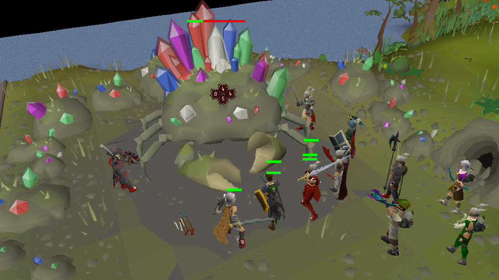
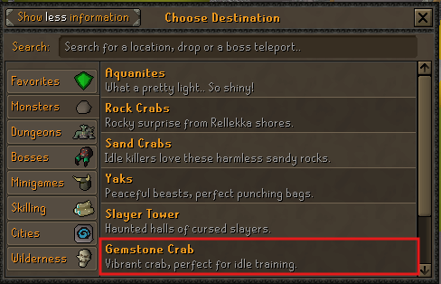
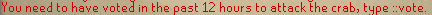
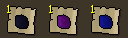

IMPACT COMBAT AND GEM DROPS
Impact Gemstone Crab Guide: Location, Drops and Profit
Gemstone Crab is a low-downtime combat target that drops noted uncut gems. Reach it through the Spirit Tree at Home, make sure you have voted within the past 12 hours, and bring food or a healing attack because the crab fights back.
See How to Get There
- Access
- Spirit Tree at
::home - Category
- Monsters
- Requirement
- Voted within 12 hours
- Damage
- The crab attacks back
- Loot
- One random noted gem type
- Observed value
- Roughly 100m GP per hour
CURRENT ACCESS ROUTE
How to Get to Gemstone Crab
The current route starts at the Spirit Tree at Home. The teleport sends you directly to Gemstone Crab’s active location, so you do not need to follow the older ::afk instruction. The crab rotates between three locations after kills, but the teleport always targets the currently active spawn.
- Teleport to
::home. - Find and use the Spirit Tree.
- Open the Monsters category.
- Select Gemstone Crab.
- Arrive at the crab’s current location.

ATTACK REQUIREMENT
Vote Before You Travel
You must have voted within the previous 12 hours before the game lets you attack Gemstone Crab. Reaching the area does not prove that your account is still eligible to attack.
You need to have voted in the past 12 hours to attack the crab, type ::vote.
Type ::vote to open or begin the current voting process, then follow the live in-game steps until the vote has been registered. Complete this before travelling so you do not arrive unable to attack.

BRING A WAY TO HEAL
Recommended Preparation
Gemstone Crab deals damage. Food use depends on your equipment, healing method, damage output, attention and session length, so begin with a setup you can safely monitor.
- Active voting eligibility from the previous 12 hours.
- Combat equipment appropriate for the style you want to use.
- Food and enough inventory space to collect noted gems.
- Runes, ammunition, charges or other supplies for the planned session.
- A healing attack or effect when available, plus emergency food.
Simple setup
Food and Your Best Available Gear
Bring combat equipment you can use comfortably, food and enough supplies for the time you plan to stay. Watch your Hitpoints rather than assuming the target is harmless.
Healing setup
Blood Barrage or Another Healing Attack
Blood Barrage can restore health while you attack and may reduce how often you eat. Bring the required runes or charges and keep emergency food; healing does not make you invincible.
THE SESSION LOOP
How the Encounter Works
The loop is simple, but it still needs attention. Confirm that voting has registered, start attacking, watch your health and collect every loot pile before it disappears. After each kill, the crab rotates to the next of three spawn locations.
- Confirm access.Make sure the account has a registered vote from the previous 12 hours.
- Attack the crab.Use your chosen combat style and confirm your runes, ammunition or charges are working.
- Watch Hitpoints.Eat or use a healing attack before incoming damage puts the account at risk.
- Collect every drop.Noted gems left on the ground do not contribute to your session value.
- Enter the nearby hole.After the kill, enter the hole at the previous spawn. It acts as the cave entrance that takes you to the crab’s next active location.
- Repeat the three-location rotation.Resume attacking at the new spawn, or use the Spirit Tree teleport again because it leads to the current location.
- Stop when access or supplies run out.Do not stretch a session beyond your food, runes, ammunition or voting eligibility.
ONE TYPE PER DROP
Gemstone Crab Drops
When Gemstone Crab produces a gem drop, the game randomly selects one of three types. The loot pile then contains multiple noted gems of that selected type.
You do not receive sapphire, dragonstone and onyx together in every drop. No current reliable source confirms equal chances, exact quantities or a fixed onyx rate.

PLAYER-OBSERVED ESTIMATE
How Much GP per Hour?
Around 100m GP per hour is a player-observed estimate, not a guarantee. The result depends especially on how many loot rolls select onyx; a session with more onyx drops can finish higher, while fewer onyx drops can pull the total down.
Gem quantities, current market values, food use, the three-location rotation, damage output and missed loot also change the result. Leaving loot on the ground will reduce the total substantially.
LOW-ATTENTION, NOT UNATTENDED
Combat Training Value
Gemstone Crab can support low-attention combat training because you can spend long stretches attacking the same large target with limited downtime. It is not fully AFK: the crab attacks you, healing may be required, drops need to be collected and voting access can expire.
Use it when you want a simple combat loop and are still available to monitor health, supplies and loot. Do not automate actions or leave the account unmanaged.
AVOID LOST TIME AND LOOT
Common Gemstone Crab Mistakes
- Travelling before voting and arriving unable to attack.
- Assuming reaching the area means the attack requirement is active.
- Forgetting food because the crab looks like a training target.
- Bringing Blood Barrage without the required runes.
- Leaving noted gem drops on the ground.
- Expecting all three gem types in one drop.
- Treating roughly 100m GP per hour as guaranteed.
- Staying at the previous spawn instead of entering the nearby hole after a kill.
- Following the Wiki’s outdated
::afkaccess instruction.
BEFORE YOU START
Quick Gemstone Crab Checklist
- Voted within the last 12 hours
- Travelled through Spirit Tree → Monsters
- Brought food or a healing method
- Checked runes, charges or ammunition
- Left inventory space for noted gems
- Ready to collect every drop
FAQ
Impact Gemstone Crab Questions
How do I get to Gemstone Crab in Impact?
Go to the Spirit Tree at ::home, open the teleport interface, choose Monsters and select Gemstone Crab. The teleport takes you to the crab's current location.
Why can't I attack Gemstone Crab?
You must have voted within the previous 12 hours before the game lets you attack Gemstone Crab. Type ::vote and follow the current in-game voting and registration steps.
Does Gemstone Crab damage the player?
Yes. Gemstone Crab attacks back, so watch your Hitpoints and bring food or a reliable way to restore health.
Can Blood Barrage keep me alive at Gemstone Crab?
Blood Barrage can reduce how often you need to eat by restoring health while you attack, but it does not make you invincible or remove the need to watch your Hitpoints.
What does Gemstone Crab drop?
Gemstone Crab drops multiple noted uncut gems of one randomly selected type: sapphire, dragonstone or onyx.
Does Gemstone Crab drop all three gem types at once?
No. Each successful drop selects one of the three gem types, then drops several noted gems of that selected type.
How much money can Gemstone Crab make per hour?
Around 100m GP per hour is a player-observed estimate, not a guarantee. The result depends especially on how many loot rolls select onyx, as well as downtime, market prices and missed drops.
What happens after Gemstone Crab dies?
Gemstone Crab rotates between three spawn locations after each kill. Enter the nearby hole at the previous spawn to travel through to the next active location.
Is Gemstone Crab fully AFK?
No. It is better described as low-attention combat training because the crab damages you, healing may be required and every noted gem drop must be collected.
Sources, verification and outdated guidance
The Impact Wiki Gemstone Crab page provides background about low-downtime combat training and the hole/cave transition. Its ::afk route is outdated, and the older ten-minute timer was not independently confirmed, so neither is presented as a current instruction.
Current access was checked against the supplied in-game Spirit Tree interface. The voting requirement, damage behaviour, healing guidance, three-location hole rotation and loot details were checked against the supplied screenshots and current player information. Content reviewed July 26, 2026.
This is an independent player guide and is not affiliated with or approved by Impact.